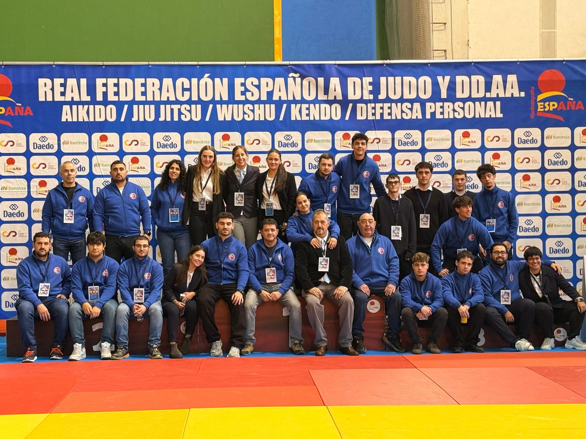

Competición
Nuestros resultados en el tatami y los próximos campeonatos.
Palmarés
| Judoka | Competición | Categoría | Fecha | Resultado |
|---|---|---|---|---|
| Sara Iglesias | Campeonato Autonómico Senior | Senior | 17 octubre 2026 | 2º puesto |
| Sara Iglesias | Campeonato Universitario de España | Universitario | 8-9 mayo 2026 | 5º puesto |
| Adrián | Campeonato Autonómico Cadete | Cadete | 1 marzo 2026 | 1er puesto |
| Diego García | Campeonato Alevín | Alevín | 22 abril 2023 | 1er puesto |
| Jalal Alaghaui | Campeonato Alevín | Alevín | 22 abril 2023 | 3er puesto |
| Lucas | Campeonato Autonómico Judo | Junior | 25 marzo 2023 | 1er puesto |
| Mara Calle | Campeonato Autonómico Judo | Junior | 25 marzo 2023 | 2º puesto |
| Candela García | Campeonato Autonómico Judo | Junior | 25 marzo 2023 | 3er puesto |
| Sara Iglesias | Campeonato de España | Senior | 9 abril 2022 | 8º puesto |
| Mara Calle | Campeonato Autonómico Judo | Alevín | 19 marzo 2022 | 2º puesto |
| Sergio | Campeonato Autonómico Judo | Alevín | 19 marzo 2022 | 3er puesto |
| Bruno | Campeonato Autonómico Judo | Alevín | 19 marzo 2022 | 3er puesto |
| Sonia | Campeonato Autonómico Judo | Alevín | 19 marzo 2022 | 3er puesto |
| Emma | Campeonato Autonómico Judo | Alevín | 19 marzo 2022 | 3er puesto |
| Edurne García | Campeonato Autonómico | Alevín | 24 abril 2022 | 1er puesto |
| Leire Rodríguez | Campeonato Autonómico | Alevín | 24 abril 2022 | 3er puesto |
| África García | Campeonato Autonómico | Alevín | 24 abril 2022 | 3er puesto |
| Asier García | Campeonato Autonómico | Alevín | 24 abril 2022 | 3er puesto |
| Sara Iglesias | Campeonato España de Judo Universitario | Universitario | 15 mayo 2022 | 5º puesto |
| Mara Calle | Campeonato Autonómico Infantil y Cadete | Infantil y Cadete | 8 mayo 2021 | 1er puesto |
| Carla Merenciano | Campeonato Autonómico Infantil y Cadete | Infantil y Cadete | 8 mayo 2021 | 3er puesto |
| Sara Iglesias | Campeonato Autonómico Judo | Junior | 7 marzo 2020 | 2º puesto |
| Tomás | Campeonato Autonómico Judo | Junior | 7 marzo 2020 | 3er puesto |
| Sara Iglesias | Campeonato Autonómico Judo | Cadete | 31 marzo 2019 | 1er puesto |
| César Pérez | Campeonato Autonómico Judo | Cadete | 31 marzo 2019 | 2º puesto |
| Sara Iglesias | Campeonato Autonómico Judo | Infantil | 23 marzo 2017 | 1er puesto |
Próximas competiciones
Calendario de la Federación de Judo de Castilla y León, la Real Federación Española de Judo y los campeonatos provinciales. Para entrenamientos especiales, concentraciones y celebraciones, mira Eventos.
1 de noviembre de 2026 · La Coruña · Federación de Judo de Castilla y León
28 de noviembre de 2026 · Lugo · Real Federación Española de Judo
12 de diciembre de 2026 · Valladolid · Federación de Judo de Castilla y León
16 de enero de 2027 · Varias sedes · Sub 21 · Judo
31 de enero de 2027 · Villaviciosa · Sub 21 · Judo
Febrero o marzo de 2027 · Fecha y sede por confirmar · Federación de Judo de Castilla y León
Marzo de 2027 · Solo provincia · Prebenjamín a Cadete · Pabellón por confirmar
Marzo de 2027 · Solo capital · Prebenjamín a Cadete · Pabellón por confirmar
10 de abril de 2027 · Gijón · Sub 18 · Judo
11 de abril de 2027 · Gijón · Sub 15 · Judo
7 y 8 de mayo de 2027 · Sede por confirmar · Varias categorías · Judo
Mayo de 2027 · Capital y provincia · Todas las categorías · Probablemente en el Pabellón Pedro Delgado (por confirmar)

Organización
Nuestro club organizó el Campeonato de España de Veteranos, de la Real Federación Española de Judo y DD.AA., celebrado el 7 de diciembre de 2025 en Segovia.
Habla con tu entrenador o contacta con el club para conocer los requisitos y el calendario de competición.